Threshold is the usage definition or aggregate view boundary or limit applied to a counter, bucket, or main account balance with a set of associated actions executed upon crossing that boundary or limit.
A threshold profile must contain at least one-threshold profile in it. A threshold profile must contain at least one threshold in it.
The threshold information is defined in a single Threshold Profile table. Threshold is embedded within the threshold profile which in turn is embedded within the threshold profile.
 Note:
Note:If there is an over commit, the threshold gets executed twice. This happens when the extra over commit amount is more than the gap to the next threshold value.
When a threshold is reached, NCC performs either one or a combination of the following actions:
-
Notification-Stop: This action notifies to stop using the resource and switch to the next resource.
-
Notification-Continue: This action notifies to continue using the same resource.
-
Notification-Reject: This action notifies and rejects the call.
-
Reject: This action rejects the call.
-
Send-SNR: This action notifies to send SNR. The value should be SendSNR.
-
Send-Notification: This action notifies to send notification to the configured device.
Note:- NCC does not read or evaluate threshold actions for direct debit requests.
- SNR is not supported for Account threshold.
Note:For the preceding example, the threshold profile is defined as follows:
-
Threshold profile group 1: It contains Threshold profile 1, Threshold profile 2, and Threshold profile 3. The unit type is volume.
-
Threshold profile 1: It is an absolute type profile that contains the Threshold 1 with a value of 400 MB from bucket. The unit is in MB.
-
Threshold profile 2: It is an absolute type profile that contains Threshold 2 with a value of 1 GB from the bucket. The unit is in GB.
-
Threshold profile 3: It is a percentage type profile that contains two thresholds - Threshold 3 and Threshold 4.
-
Threshold 3: It is defined with a value of 80%.
-
Threshold 4: It is defined with a value of 100%.
The bucket of 5 GB refers to the Threshold profile group 1.
Configuration
Log into SM GUI, navigate to Charging → ☰ → Threshold Profile Groups. To
define a new threshold, click
 to add the basic details and profile configuration as described
in the given table:
to add the basic details and profile configuration as described
in the given table:
Basic details
| Parameter | Description | Options | Mandatory/Optional |
|---|---|---|---|
| Name | The parameter indicates the name of the threshold profile. | String | Mandatory |
| Applicable to |
Indicates the allowance/balance to which the threshold profile is applicable to. Following are the valid values:
|
Enum | Mandatory |
| Type |
This parameter indicates whether the type of threshold such as Data, Time, Money, Unit. |
Select the required type from the drop-down list. | Mandatory |
| Description | This parameter provides details related to the threshold profile entity. | String | Optional |
| Applicability Condition | This parameter allows you to provide applicability condition for the threshold profile group. This condition is evaluated before applying the threshold profile group. | - | - |
| Reservation Threshold |
This parameter indicates whether the threshold must be triggered in case of reservation. The default value is False. Note the following important points related to this parameter:
|
Select this check box if you want to trigger the threshold in case of reservation. | Optional |
| OCS Policy Threshold |
This parameter indicates whether the threshold is a policy threshold or not. Select this check box to indicate a policy threshold. Deselect the check box to indicate it is not a policy threshold. However, if the flag is False and Threshold Rule Action is Send-SNR, then the system forces the user to set the flag to true and then threshold is treated as a policy threshold. If a Threshold Profile has two thresholds at same value, then the Send-SNR action for the second threshold at that value is considered to get the signaling state. |
Select this check box to indicate a policy threshold. | Optional |
| Dynamic Milestone Flag |
This parameter indicates the milestone, which is a percentage type threshold when this parameter is true with the empty rule container. The parameter value is dependent on either of the following conditions:
Note: |
Select this check box to indicate the threshold profile is used as a milestone. | Optional |
Profile configuration - Percentage
Multiple percentage thresholds can be configured in a percentage threshold profile. Applicability condition can be provided at the percentage threshold profile group level. Rules (both applicability conditions and actions) can be defined at the threshold level. If multiple percentage thresholds are defined, then you can change their priority order using the up ( ) and down ( ). These symbols appear at the top-right corner of the threshold pane.
|
Parameter |
Description |
|---|---|
| Applicability Condition | You can define applicability conditions for the percentage threshold profile. This plays an important role in the threshold profile selection. If the applicability conditions are not met, the threshold profile is not considered. |
| Select Type PERCENTAGE and click +THRESHOLD to add the first (or more) percentage values associated with the threshold profile group. | |
| Name | The parameter indicates the name of the threshold profile. |
| Value (%)* | This parameter indicates the percentage associated with the threshold profile. |
| Recurring | This parameter indicates whether the threshold is recurring. |
| Rule (conditions and actions) |
This parameter allows you to provide the rule (both applicability condition and action) for the threshold. Click ADD RULE to add another rule for the threshold. |
Profile configuration - Absolute
Multiple absolute thresholds can be configured in an absolute threshold profile. Applicability condition can be provided at the absolute threshold profile group level. Rules (both applicability conditions and actions) can be defined at the threshold level. If multiple absolute thresholds are defined, then you can change their priority order using the up ( ) and down ( ) symbols. These symbols appear at the top-right corner of the threshold pane.

|
Parameter |
Description |
||||||||||
|---|---|---|---|---|---|---|---|---|---|---|---|
| Applicability Condition |
You can define applicability conditions for the absolute threshold profile. If the applicability conditions are not met, the threshold profile is not considered. Note: |
||||||||||
| Click ABSOLUTE FROM START to add the first (or more) absolute start threshold values associated with the threshold profile group. | |||||||||||
| Absolute From Start | Name | The parameter indicates the name of the threshold profile. | |||||||||
| Value* | This parameter indicates the absolute value of to mark the beginning of threshold defined in the given type. | ||||||||||
| Type* |
This parameter indicates the unit of the absolute threshold.
|
||||||||||
| Recurring* | This parameter indicates whether the threshold is recurring. Recurring threshold
can be defined as a range. For example, if a recurring threshold of 10€ is
configured to be applicable between 50€ (Range from) and 100€ (Range to), then
the applicable thresholds are 60€, 70€, 80€, 90€ and 100€ thresholds.
Note:If multiple steps of a recurrent threshold are reached in the same transaction, then the actions from the last threshold are executed. If multiple TPGs or the same TPG with different thrshold profiles have overlapping ranges, then threshold from both the ranges is executed. |
||||||||||
| Range from (optional) |
This parameter is available only when Recurring is enabled. It indicates the recurring threshold start range. It is not included in the range. Note: |
||||||||||
| Range to (optional) | This parameter is available only when Recurring is enabled. It indicates the
recurring threshold end range. It is included in the range. If Range from parameter is not defined but Range to parameter is defined, then Range from is 0. If Range to is not defined but Range from is defined, then Range to is infinite. Note: |
||||||||||
| Rule (conditions and actions) |
This parameter provides the rule (both applicability condition and action) for the threshold. Click ADD ROW to add another rule for the threshold. |
||||||||||
|
Click ABSOLUTE FROM END to add the first (or more absolute end threshold values associated with the threshold profile group). |
|||||||||||
| Absolute From End | Name | The parameter indicates the name of the threshold profile. | |||||||||
| Value* | This parameter indicates the absolute value of to mark the beginning of threshold defined in the given type. | ||||||||||
| Type* |
This parameter indicates the unit of the absolute threshold.
|
||||||||||
| Rule (conditions and actions) |
This parameter allows you to provide the rule (both applicability condition and action) for the threshold. Click ADD ROW to add another rule for the threshold. |
||||||||||
|
Note: |
|||||||||||
| Percentage | Name | Name of the threshold. | |||||||||
| Value | This parameter indicates the absolute value. Money is the only unit type supported
for this profile. Threshold value can be defined for both main balance and overage limit. The value defined for the overage limit is used to evaluate threshold rules and actions, if configured. |
||||||||||
| Rule (conditions and actions) |
This parameter provides the rule (both applicability condition and action) for the threshold. Click ADD ROW to add another rule for the threshold. |
||||||||||
Profile configuration - both absolute and percentage
The following figure displays a scenario where both percentage and absolute thresholds are defined. The top tow panes display the thresholds defined along with applicability conditions for percentage and absolute threshold profiles. The priority order for the absolute and percentage threshold profiles can be swapped using the ⇅ symbol.
Actions associated with a threshold profile
|
Action |
Description |
|---|---|
| Create | Used to create the threshold profile entity in database by providing the mandatory and optional parameters. |
| Read | Used to display the threshold profile entity data fetched from database. |
| ThresholdProfileGroupExists | Used to check if the ThresholdProfileGroup exists in database for the given Id. |
| Update | Used to update a particular threshold profile entity in database. |
| Delete | Used to delete a particular threshold profile entity from database. |
Note:Evaluation of thresholds with reject action on step fee
This feature provides the capability to evaluate single, or multiple thresholds having Reject/Notification-Reject action on the step fee.
Call is rejected, and a notification is sent to the subscriber in the following cases:- If there is a request for reservation from step bucket when a step cost counter's reject threshold is crossed, and the step bucket's current step is fully utilized (bucket's CurrentValue = 0), then reservation is not possible as counter's existing threshold is already crossed. A notification is triggerred that informs the subscriber about the same.
- When a step cost counter's reject threshold is not crossed, and the step bucket's current step is fully utilized (bucket's CurrentValue = 0), then step up is not possible as the DeltaValue (Reject) < NextStepFee. A notification is triggerred that informs the subscriber about the same. In this case NCC rejects the consumption with the result code 4012.
- Granularity Skip for Low Balance
- Step-Up at Commit
- Use first all Steps
NCC does not check the upcoming threshold action reject for over-commit scenarios. Hence, the same base functionality of slice reduction on over commit is not applicable to upcoming Spending limit applied on Step Fee being accumulated in the counter.
Example: Cost Counter is crossed in case of over-commit scenario even when cost counter reaches Notification-Reject threshold on step fee that is charged for the step bucket.Charging step configuration:
- step size = 1000
- step size = 800 step fee = 24
- step size = 200 step fee = 16
Threshold Profile Group (TPG):
Absolute From Start (ABS) at 35 with Notification-Reject action.Multi-bundle cost counter, Usage Limit (ULI) 35 with Threshold Profile Group.
Execution:
- CCR(I) RSU = 1000 Expected outcome: step = 1, cost counter = 0, GSU = 1000.
- CCR(U1) USU = 1000, RSU = 800. Expected outcome: step = 1, cost counter = 0, GSU = 800.
- CCR(U2) USU = 900, RSU = 100. Expected outcome: step = 3, cost counter = 40, GSU=100.
- CCR(T) USU=100.
Expected outcome:
Bucket consumed = 2000, Cost Counter = 40 (Cost Counter value crossed Usage Limit of 35)
- This is applicable for SCUR (Gy/NCHF /IMS) related calls.
- This feature works only when Step-up at commit is true.
- Threshold limit is applied to a multi-bundle counter, or subscription counter.
- Multi-bundle counters can accumulate the usage, or cost consumed from multiple bundles that are subscribed by the device. However, if the bundle subscriptions are at group level or hierarchy level, then the multi-bundle counter does not accumulate any usage, and cost consumed from multiple bundles subscribed by the group.
-
Absolute from End threshold does not apply any threshold limit or actions of hard-stop/soft-stop on the counter of cost-type consumption, which specifically accumulate the Step Fee of the Step Bucket.
Examples
Example 1: When multiple thresholds are crossed at reservation and Notification–Reject has been reached for the step fee, then call is rejected with result code 4012 and a notification is sent.- step size = 1000
- step size = 800 step fee = 24
- step size = 200 step fee = 16
Threshold Profile Group: Absolute From Start
Multi-bundle counter, Usage Limit = 35 with Threshold Profile Group.
Data bucket of 100 bytes.
Bundle1: ChargingStep1 with tariff as step.
Bundle3: Multi-bundle cost counter
Bundle4: Data Bucket
Device1: Bundle1, Bundle3, and Bundle4 are attached to the device
- CCR(I) RSU = 1000MB,
Expecte outcome: step=1, cost counter=0, GSU=1000.
- CCR(U1) USU = 1000MB, RSU = 800MB,
Expected outcome: step = 1, cost counter = 0, GSU = 800.
- CCR(U2) USU = 800MB, RSU=10Byte
Expecte outcome: step=2, cost counter=24, result code=4012. Notification is sent for reject
- CCR(T) with no MSCC tag.
Expected outcome: Bucket consumed=1800, cost counter=24
Note:Example 2: Call is rejected with result code 4012, and the cost counter reaches Notification-Reject threshold on step fee that is charged for the step bucket. Verify that notification is sent both for continue and reject.
- step size = 1000
- step size = 800 step fee = 26
- step size = 200 step fee = 15
Threshold Profile Group (TPG): ABS at 26 with Notification-Continue action, and at 35 with Notification-Reject action.
Multi-bundle cost counter, Usage Limit (ULI) 35 with Threshold Profile Group.
- CCR(I) RSU = 1000
Expected outcome: step = 1, cost counter = 0, GSU = 1000
- CCR(U1) USU = 1000, RSU = 800
Expected outcome: step = 1, cost counter = 0, GSU = 800
- CCR(U2) USU = 800, RSU = 10
Expected outcome: step = 2, cost counter = 26, result code=4012. Notification is sent both for continue and reject.
- CCR(T) with no MSCC tag.
Expected outcome: Bucket consumed = 1800, cost counter = 26
Note:Example 3: When the Notification-reject threshold on Step-fee has already been crossed, then for next reservation, call is rejected with result code 4012, and a notification is sent.
Complex map is configured with the multi-bundle counter's name. The number of times a notification can be sent is 2.
- step size = 1000
- step size = 800 step fee = 24
- step size = 200 step fee = 16
Threshold Profile Group: Percentage
Multi-Bundle Counter, Usage Limit = 40 with Threshol Profile Group.
Data bucket of 100 bytes.
Bundle1: ChargingStep1 with tariff as bucket.
Bundle3: Multi-bundle cost counter
Bundle4: Data Bucket
Device1: Bundle1, Bundle3, and Bundle4 are attached to the device
- CCR(I) RSU = 1000
Expected outcome: step = 1, cost counter = 0, GSU = 1000
- CCR(U1) USU = 1000, RSU = 800
Expected outcome: step = 1, cost counter = 0, GSU = 800
- CCR(U2) USU = 800, RSU = 150
Expected outcome: Step = 2, cost counter = 24, GSU = 150. Notification is sent for continue
- CCR(U3) USU = 150, RSU = 50
Expected outcome: step = 3, cost counter = 40, GSU = 50. Notification is sent for reject
- CCR(U4) USU = 50, RSU = 10
Expected outcome: step = 3, cost counter = 40, result code = 4012
- CCR(T) with no MSCC tag.
Expected outcome: Bucket consumed = 2000, cost counter = 40. Notification is not sent for reject as it is already sent.
In case the counter threshold is reached but the data is available in the bucket, when the bucket is exausted in the next update, if any further reservation is done, then only the result code 4012 is sent.Note: - CCR(I2) RSU=1000, result code= 4012. Notification is sent for reject.
- CCR(T2) with no MSCC tag.
- CCR(I3) RSU=1000, result code = 4012. Notification is not sentt as the number of times a notification has to be sent is configured as two.
- CCR(T3) with no MSCC tag.
- Complex Map:
-
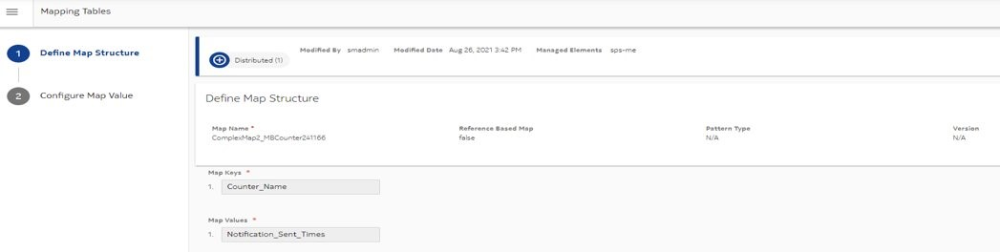
-
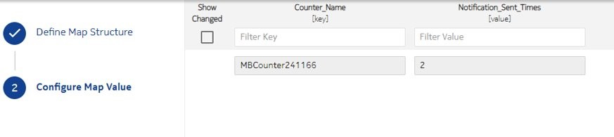
-
- Threshold Profile group:
-

-
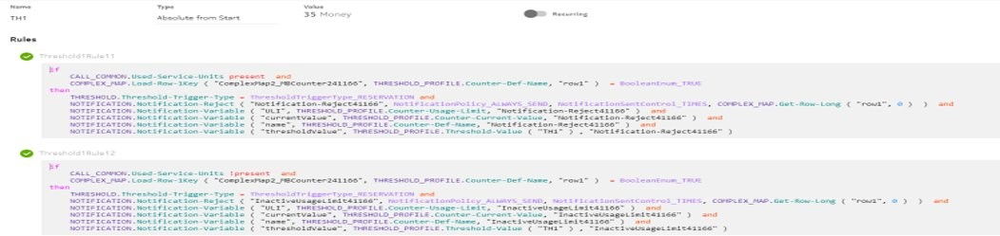
-
- Multi-Bundle counter:
-
- Tiered Allowance:
-
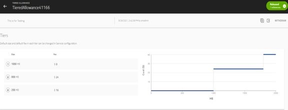
-
- Charging logic:
-
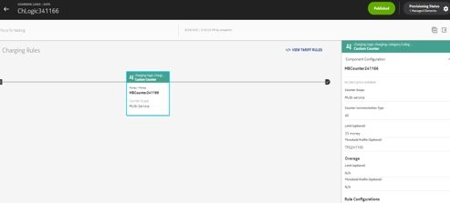
-
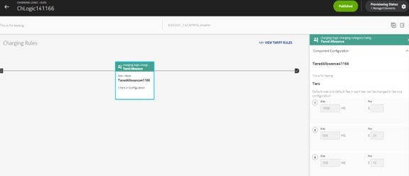
-
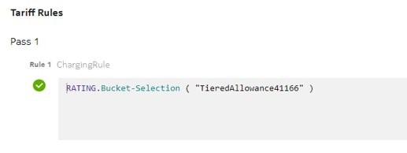
-
- Allowance Limit:
-
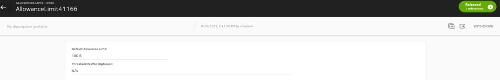
-
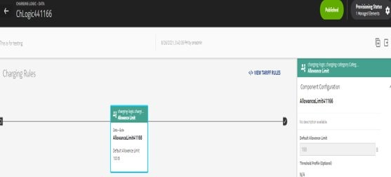
-
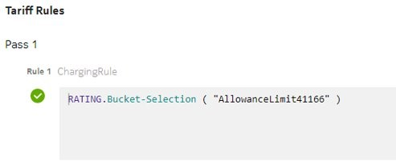
-
- Bundle:
-
- Device:
-
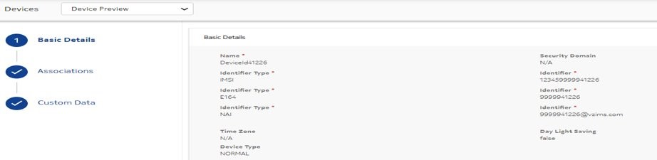
-
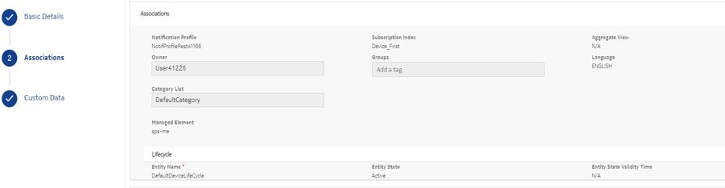
-


Additional information
- Notification is triggerred only when the threshold is configured by THRESHOLD.Threshold-Trigger-Type = ThresholdTriggerType_RESERVATION. With this configuration, the existing notification in the commit is also triggered on the threshold crossing . However, in case of CCR-U, if the commit value crosses the threshold, and there is an RSU as well, then only one notification is triggered.
- If the threshold is not configured by THRESHOLD.Threshold-Trigger-Type = ThresholdTriggerType_RESERVATION, then only the existing notification in commit is triggered on the threshold crossing.
- Notification is not triggered in cases where any reservation (partial or complete) is done from the step bucket.
- Min slice is not considered in case of step bucket when step size is less than Min-Slice and bulk step-up is not performed.